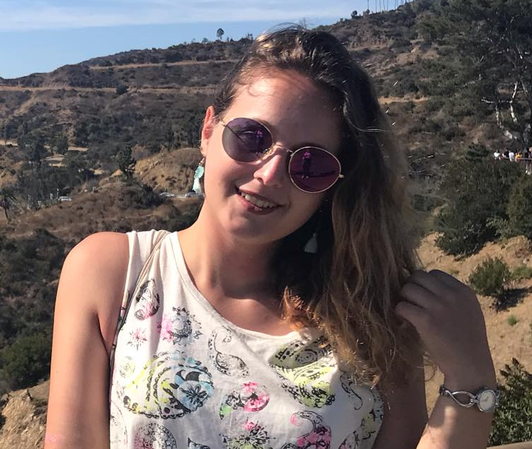

Rólam

A BME Ipari termék- és formatervező szakának vagyok a hallgatója. Szabadiőmben szeretek festeni, rajzolni. Legnagyobb szenvedélyem az utazás. Ehhez vezető út első lépése az volt, hogy gimináziumi évem alatt a nyelvtanulás szerelmesévé váltam és az angliai pár hetes nyelvkurzús során szerzett tapasztalataim után tudtam, hogy többet szeretnék látni a világból.